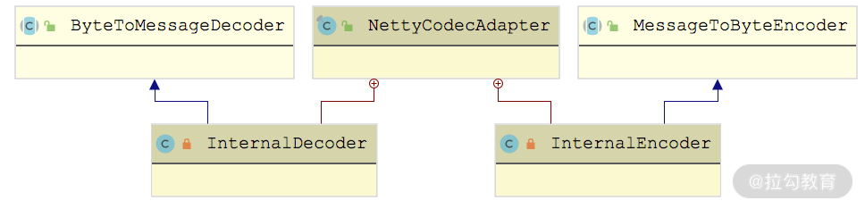
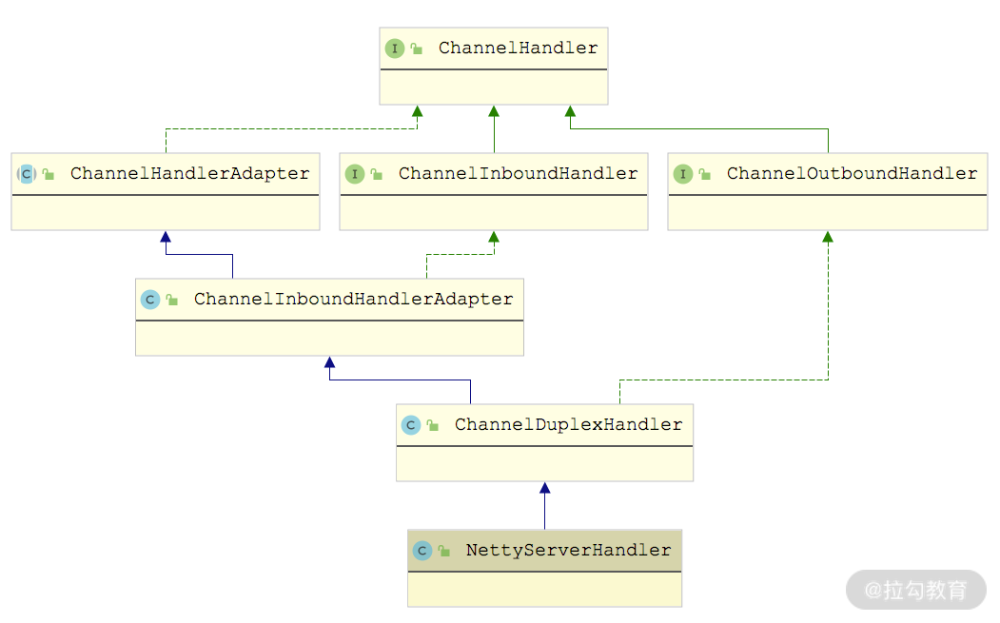

- 00 开篇词 深入掌握 Dubbo 原理与实现，提升你的职场竞争力.md
- 01 Dubbo 源码环境搭建：千里之行，始于足下.md
- 02 Dubbo 的配置总线：抓住 URL，就理解了半个 Dubbo.md
- 03 Dubbo SPI 精析，接口实现两极反转（上）.md
- 04 Dubbo SPI 精析，接口实现两极反转（下）.md
- 05 海量定时任务，一个时间轮搞定.md
- 06 ZooKeeper 与 Curator，求你别用 ZkClient 了（上）.md
- 07 ZooKeeper 与 Curator，求你别用 ZkClient 了（下）.md
- 08 代理模式与常见实现.md
- 09 Netty 入门，用它做网络编程都说好（上）.md
- 10 Netty 入门，用它做网络编程都说好（下）.md
- 11 简易版 RPC 框架实现（上）.md
- 12 简易版 RPC 框架实现（下）.md
- 13 本地缓存：降低 ZooKeeper 压力的一个常用手段.md
- 14 重试机制是网络操作的基本保证.md
- 15 ZooKeeper 注册中心实现，官方推荐注册中心实践.md
- 16 Dubbo Serialize 层：多种序列化算法，总有一款适合你.md
- 17 Dubbo Remoting 层核心接口分析：这居然是一套兼容所有 NIO 框架的设计？.md
- 18 Buffer 缓冲区：我们不生产数据，我们只是数据的搬运工.md
- 19 Transporter 层核心实现：编解码与线程模型一文打尽（上）.md
- 20 Transporter 层核心实现：编解码与线程模型一文打尽（下）.md
- 21 Exchange 层剖析：彻底搞懂 Request-Response 模型（上）.md
- 22 Exchange 层剖析：彻底搞懂 Request-Response 模型（下）.md
- 23 核心接口介绍，RPC 层骨架梳理.md
- 24 从 Protocol 起手，看服务暴露和服务引用的全流程（上）.md
- 25 从 Protocol 起手，看服务暴露和服务引用的全流程（下）.md
- 26 加餐：直击 Dubbo “心脏”，带你一起探秘 Invoker（上）.md
- 27 加餐：直击 Dubbo “心脏”，带你一起探秘 Invoker（下）.md
- 28 复杂问题简单化，代理帮你隐藏了多少底层细节？.md
- 29 加餐：HTTP 协议 + JSON-RPC，Dubbo 跨语言就是如此简单.md
- 30 Filter 接口，扩展 Dubbo 框架的常用手段指北.md
- 31 加餐：深潜 Directory 实现，探秘服务目录玄机.md
- 32 路由机制：请求到底怎么走，它说了算（上）.md
- 33 路由机制：请求到底怎么走，它说了算（下）.md
- 34 加餐：初探 Dubbo 动态配置的那些事儿.md
- 35 负载均衡：公平公正物尽其用的负载均衡策略，这里都有（上）.md
- 36 负载均衡：公平公正物尽其用的负载均衡策略，这里都有（下）.md
- 37 集群容错：一个好汉三个帮（上）.md
- 38 集群容错：一个好汉三个帮（下）.md
- 39 加餐：多个返回值不用怕，Merger 合并器来帮忙.md
- 40 加餐：模拟远程调用，Mock 机制帮你搞定.md
- 41 加餐：一键通关服务发布全流程.md
- 42 加餐：服务引用流程全解析.md
- 43 服务自省设计方案：新版本新方案.md
- 44 元数据方案深度剖析，如何避免注册中心数据量膨胀？.md
- 45 加餐：深入服务自省方案中的服务发布订阅（上）.md
- 46 加餐：深入服务自省方案中的服务发布订阅（下）.md
- 47 配置中心设计与实现：集中化配置 and 本地化配置，我都要（上）.md
- 48 配置中心设计与实现：集中化配置 and 本地化配置，我都要（下）.md
- 49 结束语 认真学习，缩小差距.md
19 Transporter 层核心实现：编解码与线程模型一文打尽（上）
在第 17 课时中，我们详细介绍了 dubbo-remoting-api 模块中 Transporter 相关的核心抽象接口，本课时将继续介绍 dubbo-remoting-api 模块的其他内容。这里我们依旧从 Transporter 层的 RemotingServer、Client、Channel、ChannelHandler 等核心接口出发，介绍这些核心接口的实现。
AbstractPeer 抽象类
首先，我们来看 AbstractPeer 这个抽象类，它同时实现了 Endpoint 接口和 ChannelHandler 接口，如下图所示，它也是 AbstractChannel、AbstractEndpoint 抽象类的父类。

AbstractPeer 继承关系
Netty 中也有 ChannelHandler、Channel 等接口，但无特殊说明的情况下，这里的接口指的都是 Dubbo 中定义的接口。如果涉及 Netty 中的接口，会进行特殊说明。
AbstractPeer 中有四个字段：一个是表示该端点自身的 URL 类型的字段，还有两个 Boolean 类型的字段（closing 和 closed）用来记录当前端点的状态，这三个字段都与 Endpoint 接口相关；第四个字段指向了一个 ChannelHandler 对象，AbstractPeer 对 ChannelHandler 接口的所有实现，都是委托给了这个 ChannelHandler 对象。从上面的继承关系图中，我们可以得出这样一个结论：AbstractChannel、AbstractServer、AbstractClient 都是要关联一个 ChannelHandler 对象的。
AbstractEndpoint 抽象类
我们顺着上图的继承关系继续向下看，AbstractEndpoint 继承了 AbstractPeer 这个抽象类。AbstractEndpoint 中维护了一个 Codec2 对象（codec 字段）和两个超时时间（timeout 字段和 connectTimeout 字段），在 AbstractEndpoint 的构造方法中会根据传入的 URL 初始化这三个字段：
public AbstractEndpoint(URL url, ChannelHandler handler) {
super(url, handler); // 调用父类AbstractPeer的构造方法
// 根据URL中的codec参数值，确定此处具体的Codec2实现类
this.codec = getChannelCodec(url);
// 根据URL中的timeout参数确定timeout字段的值，默认1000
this.timeout = url.getPositiveParameter(TIMEOUT_KEY,
DEFAULT_TIMEOUT);
// 根据URL中的connect.timeout参数确定connectTimeout字段的值，默认3000
this.connectTimeout = url.getPositiveParameter(
Constants.CONNECT_TIMEOUT_KEY, Constants.DEFAULT_CONNECT_TIMEOUT);
}
在[第 17 课时]介绍 Codec2 接口的时候提到它是一个 SPI 扩展点，这里的 AbstractEndpoint.getChannelCodec() 方法就是基于 Dubbo SPI 选择其扩展实现的，具体实现如下：
protected static Codec2 getChannelCodec(URL url) {
// 根据URL的codec参数获取扩展名
String codecName = url.getParameter(Constants.CODEC_KEY, "telnet");
if (ExtensionLoader.getExtensionLoader(Codec2.class).hasExtension(codecName)) { // 通过ExtensionLoader加载并实例化Codec2的具体扩展实现
return ExtensionLoader.getExtensionLoader(Codec2.class).getExtension(codecName);
} else { // Codec2接口不存在相应的扩展名，就尝试从Codec这个老接口的扩展名中查找，目前Codec接口已经废弃了，所以省略这部分逻辑
}
}
另外，AbstractEndpoint 还实现了 Resetable 接口（只有一个 reset() 方法需要实现），虽然 AbstractEndpoint 中的 reset() 方法比较长，但是逻辑非常简单，就是根据传入的 URL 参数重置 AbstractEndpoint 的三个字段。下面是重置 codec 字段的代码片段，还是调用 getChannelCodec() 方法实现的：
public void reset(URL url) {
// 检测当前AbstractEndpoint是否已经关闭(略)
// 省略重置timeout、connectTimeout两个字段的逻辑
try {
if (url.hasParameter(Constants.CODEC_KEY)) {
this.codec = getChannelCodec(url);
}
} catch (Throwable t) {
logger.error(t.getMessage(), t);
}
}
Server 继承路线分析
AbstractServer 和 AbstractClient 都实现了 AbstractEndpoint 抽象类，我们先来看 AbstractServer 的实现。AbstractServer 在继承了 AbstractEndpoint 的同时，还实现了 RemotingServer 接口，如下图所示：

AbstractServer 继承关系图
AbstractServer 是对服务端的抽象，实现了服务端的公共逻辑。AbstractServer 的核心字段有下面几个。
- localAddress、bindAddress（InetSocketAddress 类型）：分别对应该 Server 的本地地址和绑定的地址，都是从 URL 中的参数中获取。bindAddress 默认值与 localAddress 一致。
- accepts（int 类型）：该 Server 能接收的最大连接数，从 URL 的 accepts 参数中获取，默认值为 0，表示没有限制。
- executorRepository（ExecutorRepository 类型）：负责管理线程池，后面我们会深入介绍 ExecutorRepository 的具体实现。
- executor（ExecutorService 类型）：当前 Server 关联的线程池，由上面的 ExecutorRepository 创建并管理。
在 AbstractServer 的构造方法中会根据传入的 URL初始化上述字段，并调用 doOpen() 这个抽象方法完成该 Server 的启动，具体实现如下：
public AbstractServer(URL url, ChannelHandler handler) {
super(url, handler); // 调用父类的构造方法
// 根据传入的URL初始化localAddress和bindAddress
localAddress = getUrl().toInetSocketAddress();
String bindIp = getUrl().getParameter(Constants.BIND_IP_KEY, getUrl().getHost());
int bindPort = getUrl().getParameter(Constants.BIND_PORT_KEY, getUrl().getPort());
if (url.getParameter(ANYHOST_KEY, false) || NetUtils.isInvalidLocalHost(bindIp)) {
bindIp = ANYHOST_VALUE;
}
bindAddress = new InetSocketAddress(bindIp, bindPort);
// 初始化accepts等字段
this.accepts = url.getParameter(ACCEPTS_KEY, DEFAULT_ACCEPTS);
this.idleTimeout = url.getParameter(IDLE_TIMEOUT_KEY, DEFAULT_IDLE_TIMEOUT);
try {
doOpen(); // 调用doOpen()这个抽象方法，启动该Server
} catch (Throwable t) {
throw new RemotingException("...");
}
// 获取该Server关联的线程池
executor = executorRepository.createExecutorIfAbsent(url);
}
ExecutorRepository
在继续分析 AbstractServer 的具体实现类之前，我们先来了解一下 ExecutorRepository 这个接口。
ExecutorRepository 负责创建并管理 Dubbo 中的线程池，该接口虽然是个 SPI 扩展点，但是只有一个默认实现—— DefaultExecutorRepository。在该默认实现中维护了一个 ConcurrentMap<String, ConcurrentMap<Integer, ExecutorService>> 集合（data 字段）缓存已有的线程池，第一层 Key 值表示线程池属于 Provider 端还是 Consumer 端，第二层 Key 值表示线程池关联服务的端口。
DefaultExecutorRepository.createExecutorIfAbsent() 方法会根据 URL 参数创建相应的线程池并缓存在合适的位置，具体实现如下：
public synchronized ExecutorService createExecutorIfAbsent(URL url) {
// 根据URL中的side参数值决定第一层key
String componentKey = EXECUTOR_SERVICE_COMPONENT_KEY;
if (CONSUMER_SIDE.equalsIgnoreCase(url.getParameter(SIDE_KEY))) {
componentKey = CONSUMER_SIDE;
}
Map<Integer, ExecutorService> executors = data.computeIfAbsent(componentKey, k -> new ConcurrentHashMap<>());
// 根据URL中的port值确定第二层key
Integer portKey = url.getPort();
ExecutorService executor = executors.computeIfAbsent(portKey, k -> createExecutor(url));
// 如果缓存中相应的线程池已关闭，则同样需要调用createExecutor()方法
// 创建新的线程池，并替换掉缓存中已关闭的线程持，这里省略这段逻辑
return executor;
}
在 createExecutor() 方法中，会通过 Dubbo SPI 查找 ThreadPool 接口的扩展实现，并调用其 getExecutor() 方法创建线程池。ThreadPool 接口被 @SPI 注解修饰，默认使用 FixedThreadPool 实现，但是 ThreadPool 接口中的 getExecutor() 方法被 @Adaptive 注解修饰，动态生成的适配器类会优先根据 URL 中的 threadpool 参数选择 ThreadPool 的扩展实现。ThreadPool 接口的实现类如下图所示：

ThreadPool 继承关系图
不同实现会根据 URL 参数创建不同特性的线程池，这里以CacheThreadPool为例进行分析：
public Executor getExecutor(URL url) {
String name = url.getParameter(THREAD_NAME_KEY, DEFAULT_THREAD_NAME);
// 核心线程数量
int cores = url.getParameter(CORE_THREADS_KEY, DEFAULT_CORE_THREADS);
// 最大线程数量
int threads = url.getParameter(THREADS_KEY, Integer.MAX_VALUE);
// 缓冲队列的最大长度
int queues = url.getParameter(QUEUES_KEY, DEFAULT_QUEUES);
// 非核心线程的最大空闲时长，当非核心线程空闲时间超过该值时，会被回收
int alive = url.getParameter(ALIVE_KEY, DEFAULT_ALIVE);
// 下面就是依赖JDK的ThreadPoolExecutor创建指定特性的线程池并返回
return new ThreadPoolExecutor(cores, threads, alive, TimeUnit.MILLISECONDS,
queues == 0 ? new SynchronousQueue<Runnable>() :
(queues < 0 ? new LinkedBlockingQueue<Runnable>()
: new LinkedBlockingQueue<Runnable>(queues)),
new NamedInternalThreadFactory(name, true), new AbortPolicyWithReport(name, url));
}
再简单说一下其他 ThreadPool 实现创建的线程池。
- LimitedThreadPool：与 CacheThreadPool 一样，可以指定核心线程数、最大线程数以及缓冲队列长度。区别在于，LimitedThreadPool 创建的线程池的非核心线程不会被回收。
- FixedThreadPool：核心线程数和最大线程数一致，且不会被回收。
上述三种类型的线程池都是基于 JDK ThreadPoolExecutor 线程池，在核心线程全部被占用的时候，会优先将任务放到缓冲队列中缓存，在缓冲队列满了之后，才会尝试创建新线程来处理任务。
EagerThreadPool 创建的线程池是 EagerThreadPoolExecutor（继承了 JDK 提供的 ThreadPoolExecutor），使用的队列是 TaskQueue（继承了LinkedBlockingQueue）。该线程池与 ThreadPoolExecutor 不同的是：在线程数没有达到最大线程数的前提下，EagerThreadPoolExecutor 会优先创建线程来执行任务，而不是放到缓冲队列中；当线程数达到最大值时，EagerThreadPoolExecutor 会将任务放入缓冲队列，等待空闲线程。
EagerThreadPoolExecutor 覆盖了 ThreadPoolExecutor 中的两个方法：execute() 方法和 afterExecute() 方法，具体实现如下，我们可以看到其中维护了一个 submittedTaskCount 字段（AtomicInteger 类型），用来记录当前在线程池中的任务总数（正在线程中执行的任务数+队列中等待的任务数）。
public void execute(Runnable command) {
// 任务提交之前，递增submittedTaskCount
submittedTaskCount.incrementAndGet();
try {
super.execute(command); // 提交任务
} catch (RejectedExecutionException rx) {
final TaskQueue queue = (TaskQueue) super.getQueue();
try {
// 任务被拒绝之后，会尝试再次放入队列中缓存，等待空闲线程执行
if (!queue.retryOffer(command, 0, TimeUnit.MILLISECONDS)) {
// 再次入队被拒绝，则队列已满，无法执行任务
// 递减submittedTaskCount
submittedTaskCount.decrementAndGet();
throw new RejectedExecutionException("Queue capacity is full.", rx);
}
} catch (InterruptedException x) {
// 再次入队列异常，递减submittedTaskCount
submittedTaskCount.decrementAndGet();
throw new RejectedExecutionException(x);
}
} catch (Throwable t) { // 任务提交异常，递减submittedTaskCount
submittedTaskCount.decrementAndGet();
throw t;
}
}
protected void afterExecute(Runnable r, Throwable t) {
// 任务指定结束，递减submittedTaskCount
submittedTaskCount.decrementAndGet();
}
看到这里，你可能会有些疑惑：没有看到优先创建线程执行任务的逻辑啊。其实重点在关联的 TaskQueue 实现中，它覆盖了 LinkedBlockingQueue.offer() 方法，会判断线程池的 submittedTaskCount 值是否已经达到最大线程数，如果未超过，则会返回 false，迫使线程池创建新线程来执行任务。示例代码如下：
public boolean offer(Runnable runnable) {
// 获取当前线程池中的活跃线程数
int currentPoolThreadSize = executor.getPoolSize();
// 当前有线程空闲，直接将任务提交到队列中，空闲线程会直接从中获取任务执行
if (executor.getSubmittedTaskCount() < currentPoolThreadSize) {
return super.offer(runnable);
}
// 当前没有空闲线程，但是还可以创建新线程，则返回false，迫使线程池创建
// 新线程来执行任务
if (currentPoolThreadSize < executor.getMaximumPoolSize()) {
return false;
}
// 当前线程数已经达到上限，只能放到队列中缓存了
return super.offer(runnable);
}
线程池最后一个相关的小细节是 AbortPolicyWithReport ，它继承了 ThreadPoolExecutor.AbortPolicy，覆盖的 rejectedExecution 方法中会输出包含线程池相关信息的 WARN 级别日志，然后进行 dumpJStack() 方法，最后才会抛出RejectedExecutionException 异常。
我们回到 Server 的继承线上，下面来看基于 Netty 4 实现的 NettyServer，它继承了前文介绍的 AbstractServer，实现了 doOpen() 方法和 doClose() 方法。这里重点看 doOpen() 方法，如下所示：
protected void doOpen() throws Throwable {
// 创建ServerBootstrap
bootstrap = new ServerBootstrap();
// 创建boss EventLoopGroup
bossGroup = NettyEventLoopFactory.eventLoopGroup(1, "NettyServerBoss");
// 创建worker EventLoopGroup
workerGroup = NettyEventLoopFactory.eventLoopGroup(
getUrl().getPositiveParameter(IO_THREADS_KEY, Constants.DEFAULT_IO_THREADS),
"NettyServerWorker");
// 创建NettyServerHandler，它是一个Netty中的ChannelHandler实现，
// 不是Dubbo Remoting层的ChannelHandler接口的实现
final NettyServerHandler nettyServerHandler = new NettyServerHandler(getUrl(), this);
// 获取当前NettyServer创建的所有Channel，这里的channels集合中的
// Channel不是Netty中的Channel对象，而是Dubbo Remoting层的Channel对象
channels = nettyServerHandler.getChannels();
// 初始化ServerBootstrap，指定boss和worker EventLoopGroup
bootstrap.group(bossGroup, workerGroup)
.channel(NettyEventLoopFactory.serverSocketChannelClass())
.option(ChannelOption.SO_REUSEADDR, Boolean.TRUE)
.childOption(ChannelOption.TCP_NODELAY, Boolean.TRUE)
.childOption(ChannelOption.ALLOCATOR, PooledByteBufAllocator.DEFAULT)
.childHandler(new ChannelInitializer<SocketChannel>() {
@Override
protected void initChannel(SocketChannel ch) throws Exception {
// 连接空闲超时时间
int idleTimeout = UrlUtils.getIdleTimeout(getUrl());
// NettyCodecAdapter中会创建Decoder和Encoder
NettyCodecAdapter adapter = new NettyCodecAdapter(getCodec(), getUrl(), NettyServer.this);
ch.pipeline()
// 注册Decoder和Encoder
.addLast("decoder", adapter.getDecoder())
.addLast("encoder", adapter.getEncoder())
// 注册IdleStateHandler
.addLast("server-idle-handler", new IdleStateHandler(0, 0, idleTimeout, MILLISECONDS))
// 注册NettyServerHandler
.addLast("handler", nettyServerHandler);
}
});
// 绑定指定的地址和端口
ChannelFuture channelFuture = bootstrap.bind(getBindAddress());
channelFuture.syncUninterruptibly(); // 等待bind操作完成
channel = channelFuture.channel();
}
看完 NettyServer 实现的 doOpen() 方法之后，你会发现它和简易版 RPC 框架中启动一个 Netty 的 Server 端基本流程类似：初始化 ServerBootstrap、创建 Boss EventLoopGroup 和 Worker EventLoopGroup、创建 ChannelInitializer 指定如何初始化 Channel 上的 ChannelHandler 等一系列 Netty 使用的标准化流程。
其实在 Transporter 这一层看，功能的不同其实就是注册在 Channel 上的 ChannelHandler 不同，通过 doOpen() 方法得到的 Server 端结构如下：

NettyServer 模型
核心 ChannelHandler
下面我们来逐个看看这四个 ChannelHandler 的核心功能。
首先是decoder 和 encoder，它们都是 NettyCodecAdapter 的内部类，如下图所示，分别继承了 Netty 中的 ByteToMessageDecoder 和 MessageToByteEncoder：

还记得 AbstractEndpoint 抽象类中的 codec 字段（Codec2 类型）吗？InternalDecoder 和 InternalEncoder 会将真正的编解码功能委托给 NettyServer 关联的这个 Codec2 对象去处理，这里以 InternalDecoder 为例进行分析：
private class InternalDecoder extends ByteToMessageDecoder {
protected void decode(ChannelHandlerContext ctx, ByteBuf input, List<Object> out) throws Exception {
// 将ByteBuf封装成统一的ChannelBuffer
ChannelBuffer message = new NettyBackedChannelBuffer(input);
// 拿到关联的Channel
NettyChannel channel = NettyChannel.getOrAddChannel(ctx.channel(), url, handler);
do {
// 记录当前readerIndex的位置
int saveReaderIndex = message.readerIndex();
// 委托给Codec2进行解码
Object msg = codec.decode(channel, message);
// 当前接收到的数据不足一个消息的长度，会返回NEED_MORE_INPUT，
// 这里会重置readerIndex，继续等待接收更多的数据
if (msg == Codec2.DecodeResult.NEED_MORE_INPUT) {
message.readerIndex(saveReaderIndex);
break;
} else {
if (msg != null) { // 将读取到的消息传递给后面的Handler处理
out.add(msg);
}
}
} while (message.readable());
}
}
你是不是发现 InternalDecoder 的实现与我们简易版 RPC 的 Decoder 实现非常相似呢？
InternalEncoder 的具体实现就不再展开讲解了，你若感兴趣可以翻看源码进行研究和分析。
接下来是IdleStateHandler，它是 Netty 提供的一个工具型 ChannelHandler，用于定时心跳请求的功能或是自动关闭长时间空闲连接的功能。它的原理到底是怎样的呢？在 IdleStateHandler 中通过 lastReadTime、lastWriteTime 等几个字段，记录了最近一次读/写事件的时间，IdleStateHandler 初始化的时候，会创建一个定时任务，定时检测当前时间与最后一次读/写时间的差值。如果超过我们设置的阈值（也就是上面 NettyServer 中设置的 idleTimeout），就会触发 IdleStateEvent 事件，并传递给后续的 ChannelHandler 进行处理。后续 ChannelHandler 的 userEventTriggered() 方法会根据接收到的 IdleStateEvent 事件，决定是关闭长时间空闲的连接，还是发送心跳探活。
最后来看NettyServerHandler，它继承了 ChannelDuplexHandler，这是 Netty 提供的一个同时处理 Inbound 数据和 Outbound 数据的 ChannelHandler，从下面的继承图就能看出来。

NettyServerHandler 继承关系图
在 NettyServerHandler 中有 channels 和 handler 两个核心字段。
- channels（Map<String,Channel>集合）：记录了当前 Server 创建的所有 Channel，从下图中可以看到，连接创建（触发 channelActive() 方法）、连接断开（触发 channelInactive()方法）会操作 channels 集合进行相应的增删。

- handler（ChannelHandler 类型）：NettyServerHandler 内几乎所有方法都会触发该 Dubbo ChannelHandler 对象（如下图）。

这里以 write() 方法为例进行简单分析：
public void write(ChannelHandlerContext ctx, Object msg, ChannelPromise promise) throws Exception {
super.write(ctx, msg, promise); // 将发送的数据继续向下传递
// 并不影响消息的继续发送，只是触发sent()方法进行相关的处理，这也是方法
// 名称是动词过去式的原因，可以仔细体会一下。其他方法可能没有那么明显，
// 这里以write()方法为例进行说明
NettyChannel channel = NettyChannel.getOrAddChannel(ctx.channel(), url, handler);
handler.sent(channel, msg);
}
在 NettyServer 创建 NettyServerHandler 的时候，可以看到下面的这行代码：
final NettyServerHandler nettyServerHandler = new NettyServerHandler(getUrl(), this);
其中第二个参数传入的是 NettyServer 这个对象，你可以追溯一下 NettyServer 的继承结构，会发现它的最顶层父类 AbstractPeer 实现了 ChannelHandler，并且将所有的方法委托给其中封装的 ChannelHandler 对象，如下图所示：

也就是说，NettyServerHandler 会将数据委托给这个 ChannelHandler。
到此为止，Server 这条继承线就介绍完了。你可以回顾一下，从 AbstractPeer 开始往下，一路继承下来，NettyServer 拥有了 Endpoint、ChannelHandler 以及RemotingServer多个接口的能力，关联了一个 ChannelHandler 对象以及 Codec2 对象，并最终将数据委托给这两个对象进行处理。所以，上层调用方只需要实现 ChannelHandler 和 Codec2 这两个接口就可以了。

总结
本课时重点介绍了 Dubbo Transporter 层中 Server 相关的实现。
首先，我们介绍了 AbstractPeer 这个最顶层的抽象类，了解了 Server、Client 和 Channel 的公共属性。接下来，介绍了 AbstractEndpoint 抽象类，它提供了编解码等 Server 和 Client 所需的公共能力。最后，我们深入分析了 AbstractServer 抽象类以及基于 Netty 4 实现的 NettyServer，同时，还深入剖析了涉及的各种组件，例如，ExecutorRepository、NettyServerHandler 等。